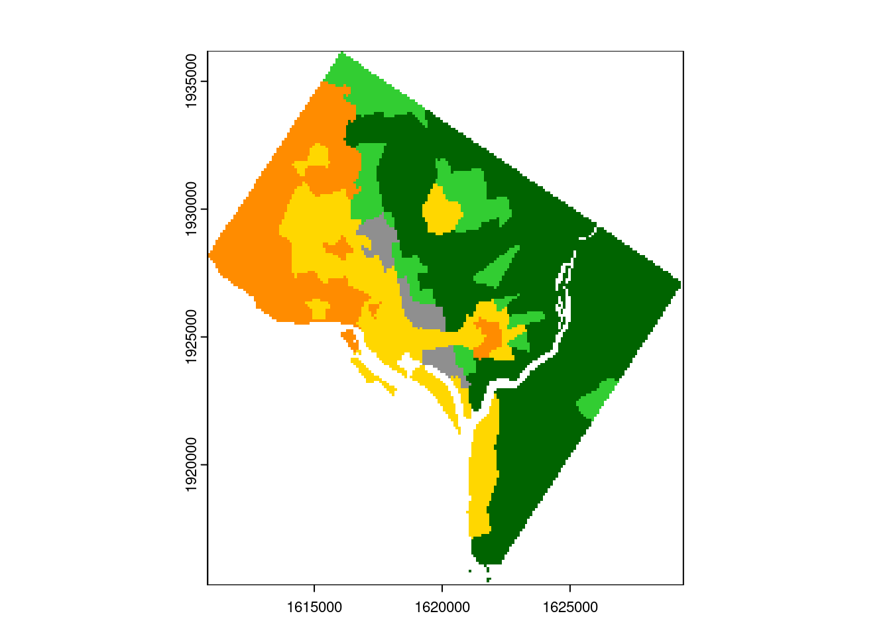

library(sf)
library(dplyr)
library(tidyverse)
library(terra)
library(kableExtra)14 Metody analizy krajobrazowej
Poniższy przykład ilustruje zastosowanie metod analizy krajobrazowej w analizie rasowo-etnicznej struktury ludności
list_race = c("WHITE", "BLACK", "ASIAN", "HISPANIC", "AM", "OTHER")14.1 Dane
cls_df <- st_read("data/data_geo/dc_results.gpkg", layer = "cls1990_2020")Reading layer `cls1990_2020' from data source
`/home/anna/DYDAKTYKA/analiza_wizualizacja_struktury_ludnosci/data/data_geo/dc_results.gpkg'
using driver `GPKG'
Simple feature collection with 206 features and 3 fields
Geometry type: MULTIPOLYGON
Dimension: XY
Bounding box: xmin: 1610830 ymin: 1915291 xmax: 1629412 ymax: 1936182
Projected CRS: NAD83 / Conus AlbersPrzekodowanie wartości używając funkcji recode() z pakietu dplyr
cls_df$cls90 = recode(cls_df$cls90, "WL"= 1, "WM" = 2, "BL" = 3, "BM" = 4, "AL" = 5, "AM" = 6, "HL" = 7, "HM" = 8, "IL" = 9, "IM" = 10, "OL" = 11, "OM" = 12, "HD" = 13)Rasteryzacja
Funkcja fasterize() wymaga zdefiniowania kilku argumentów:
- sf - obiekt sf, który ma być zrasteryzowany
- raster - “pusta” warstwa rastrowa zawierająca parametry rastra - zasięg oraz rozdzielczość
- field - pole, wg którego ma być wykonana rasteryzacja
- fun - funkcja określająca operację wykonywaną w przypadku nakładających się poligonów.
Stworzenie “pustego” rastra
Zostanie utworzony raster o rozdzielczości 100 m o zasięgu pobranym z warstwy cls_df.
library(terra)
rast <- rast(cls_df, res = 100)
rastclass : SpatRaster
dimensions : 209, 186, 1 (nrow, ncol, nlyr)
resolution : 100, 100 (x, y)
extent : 1610830, 1629430, 1915291, 1936191 (xmin, xmax, ymin, ymax)
coord. ref. : NAD83 / Conus Albers (EPSG:5070) Stworzenie rastra zawierającego typy zróżnicowania rasowo-etnicznego w 1990 roku
cls = rasterize(cls_df, rast, field = "cls90")Wyświetlenie rastra zawierającego typy zróżnicowania rasowo-etnicznego w 1990 roku
#kolory przypisane do poszczególnych typów zróżnicowania rasowo-etncznego w kolejności WL, WM, BL, BM, AL, AM, HL, HM, IL, IM, OL, OM, HD.
cls_color =c("#FF8C00", "#FFD700", "#006400", "#32CD32", "#CD5555", "#FF6A6A", "#5D478B", "#9370DB", "#1C86EE", "#87CEFF", "#8B2500", "#CD661D","#8F8F8F")
coltb <- data.frame(value=1:13, col = cls_color)
#przypisanie tabeli kolorow do rastra
coltab(cls) <- coltb
#wyswietlanie rastra we właściwych kolorach
plot(cls)
14.2 Obliczanie metryk krajobrazowych
Komórki rastra, którym przypisano poszczególne typy zróżnicowania rasowo-etnicznego tworzą określoną mozaikę rasowo-etniczną. Taką mozaikę można opisać za pomocą metryk krajobrazowych. W R metryki krajobrazowe można obliczyć używając pakietu landscapemetrics. Metryki krajobrazowe mogą być obliczone na poziomie pojedyńczych płatów (ang. patch), dla danej klasy (ang. class), dla całego krajobrazu (ang. landscape). Poniżej zostaną wyliczone wybrane metryki dla poszczególnych klas.
library(landscapemetrics)Wyświetlenie metryk krajobrazowych, które można wyliczyć na poziomie klasy. Tabela zawiera skróconą nazwę wskaźnika (metric), pełną nazwę wskaźnika (name), rodzaj metryki (type, np. aggregation metric, shape_metric), nazwę funkcji obliczającej dany wskaźnik w pakiecie landscapemetrics (function_name).
class_metr = list_lsm(level = "class")head(class_metr)# A tibble: 6 × 5
metric name type level function_name
<chr> <chr> <chr> <chr> <chr>
1 ai aggregation index aggregation metric class lsm_c_ai
2 area_cv patch area area and edge metric class lsm_c_area_cv
3 area_mn patch area area and edge metric class lsm_c_area_mn
4 area_sd patch area area and edge metric class lsm_c_area_sd
5 ca total (class) area area and edge metric class lsm_c_ca
6 cai_cv core area index core area metric class lsm_c_cai_cv 14.2.1 Obliczanie metryk krajobrazowych dla typów zróżnicowania rasowo-etniczego w 1990 roku.
Poniżej zostaną obliczone 4 metryki krajobrazowe:
- np - liczba płatów,
- lpi - stosunek powierzchni największego płata danego typu do powierzchni całego obszaru
- PLAND - procent obszaru zajęty przez dany typ zróżnicowania
- AI - poziom agregacji (0 – pełne rozproszenie, komórki tego samego typu nie graniczą ze sobą; 100 – jeden płat danego typu).
lm = calculate_lsm(cls, level = ("class"), what = c("lsm_c_np", "lsm_c_lpi", "lsm_c_pland", "lsm_c_ai"))Warning: Only using 'what' argument.Zmiana formatu wyświetlania tabeli z “długiego” na “szeroki”.
library(tidyverse)
lm_df = pivot_wider(lm[, c("class", "metric", "value")], names_from = metric, values_from = value)Wartości metryk krajobrazowych w 1990 roku.
lm_df# A tibble: 5 × 5
class ai lpi np pland
<int> <dbl> <dbl> <dbl> <dbl>
1 1 95.3 16.2 5 17.5
2 2 92.2 12.0 9 18.7
3 3 96.7 49.0 3 49.1
4 4 90.9 2.94 10 11.4
5 13 91.6 1.22 3 3.26Tabela zawierająca kod liczbowy oraz tekstowy typu zróżnicowania rasowo-etnicznego
cls_code = data.frame(cls = c("WL", "WM", "BL", "BM", "AL", "AM", "HL", "HM", "IL", "IM","OL","OM", "HD"), class = 1:13)
results = merge(cls_code, lm_df, by = "class", all.x = TRUE)Zapisanie metryk obliczonych dla poszczególnych klas do pliku.
write.csv(results, "results/landscape_metrics.csv", row.names = FALSE)14.2.2 Obliczenie metryk krajobrazowych na poziomie całego obszaru
Obliczenie liczby płatów
np = lsm_l_np(cls)
np# A tibble: 1 × 6
layer level class id metric value
<int> <chr> <int> <int> <chr> <dbl>
1 1 landscape NA NA np 30lpi = lsm_l_lpi(cls)
lpi# A tibble: 1 × 6
layer level class id metric value
<int> <chr> <int> <int> <chr> <dbl>
1 1 landscape NA NA lpi 49.014.3 Prezentacja wyników
plot(cls, main = "1990")results %>%
mutate_if(is.numeric, round, digits=2) %>%
kbl() %>%
kable_classic_2(full_width = F) %>%
column_spec(1, background = cls_color)| class | cls | ai | lpi | np | pland |
|---|---|---|---|---|---|
| 1 | WL | 95.34 | 16.17 | 5 | 17.55 |
| 2 | WM | 92.16 | 12.05 | 9 | 18.72 |
| 3 | BL | 96.73 | 49.04 | 3 | 49.07 |
| 4 | BM | 90.87 | 2.94 | 10 | 11.41 |
| 5 | AL | NA | NA | NA | NA |
| 6 | AM | NA | NA | NA | NA |
| 7 | HL | NA | NA | NA | NA |
| 8 | HM | NA | NA | NA | NA |
| 9 | IL | NA | NA | NA | NA |
| 10 | IM | NA | NA | NA | NA |
| 11 | OL | NA | NA | NA | NA |
| 12 | OM | NA | NA | NA | NA |
| 13 | HD | 91.63 | 1.22 | 3 | 3.26 |
14.3.1 Interpretacja wyników
Metryki krajobrazowe zastosowane do opisania krajobrazu zróżnicowania rasowo-etnicznego dostarczają dodatkowych informacji na temat przestrzennego rozkładu struktury rasowo-etnicznej na analizowanym obszarze. Typy o małym zróżnicowaniu rasowo-etnicznym to obszary zdominowane przez jedną grupę rasowo-etniczną, w których nie zachodzi integracja między grupami rasowo-etnicznymi. Typy o średnim i dużym zróżnicowaniu rasowym reprezentują obszary zamieszkałe przez kilka grup rasowo-etnicznych. Z punktu widzenia indywidualnego człowieka, obszar objęty jednym dużym płatem zdominowanym przez daną grupę rasowo-etniczną jest postrzegany jako obszar o większej segregacji niż obszar z większą liczbą małych płatów. Natomiast, duże płaty obszarów o dużym zróżnicowaniu rasowym wskazują, że integracja między poszczególnymi grupami rasowo-etnicznymi zachodzi na większą skalę przestrzenną.
W 1990 roku District of Columbia podzielony był na 30 enklaw rasowo-etnicznych (płatów) należących do 5 typów zróżnicowania rasowo-etnicznego (WL, WM, BL, BM, HD):
- 8 enklaw, zajmujących 66,6 % powierzchni należało do typów mało zróżnicowanych
- 19 enkkaw, zajmujących 30,1% powierzchni należało do typów średnio zróżnicowanych
- 4 enklawy, zajmujące 3,3% powierzchni należały do typu o dużym zróżnicowaniu rasowo-etnicznym.
Największą powierzchnię (49%) zajmował typ “BL” - mało zróżnicowany zdominowany przez czarnych. Największa enklawa rasowo-etniczna zajmowała 49% powierzchni i należała do typu BL.